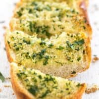

Home Made Garlic Bread

delicious home made garlic bread
This Homemade Garlic Bread Recipe uses plenty of fresh garlic, butter, and olive oil for a rich and garlicky finish. Freezer friendly!
Ingredients
- 1 loaf Italian or French bread, approx. 24" long
- 2 Tbsp olive oil
- 3 cloves garlic, minced
- 1/4 cup fresh parsley, chopped
- a pinch salt
Method
- Preheat the oven to 400ºF. In a bowl, stir together the room temperature butter, olive oil, minced garlic, chopped parsley, and a pinch of salt until relatively smooth.
- Cut the bread into two 12" long pieces, then cut each piece open lengthwise. Lay the bread on a baking sheet cut sides facing up. Spread the garlic butter mixture evenly over the open surfaces of the bread.*
- Bake the bread for 10-15 minutes, or until the edges are golden brown and crispy. Cut the bread into 2-inch sections and serve hot.